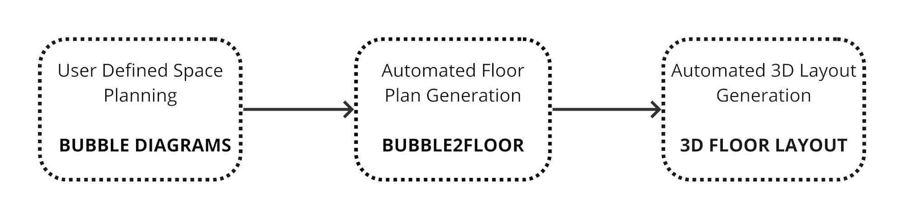
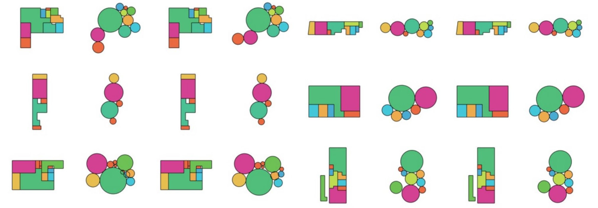
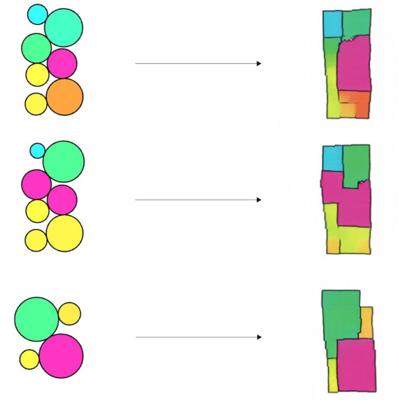
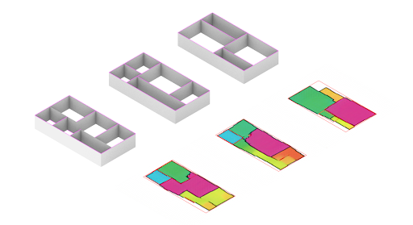

BubblesToFloors (2021)
The Bubble2Floor is an implementation of the Pix2Pix GAN-model, and is a tool for
spatial prototyping of built spaces. It was a collaboration between Twisha Raja and Samuel Losi.
It works in three main steps-

The objective of the bubble2floor Generator the design of housing units. The workflow is includes the use of a few different softwares that are popularly employed in design circles.

Bubble-diagrams generated from the Rhino-Grasshopper workspace are pushed through a pytorch model trained on bubble-diagram and floor plan pairs.This model is utilized to generate a series of floor plan representations of the bubble-diagram, which then creates approximated room geometries using openCV on these images.

The generated floor plan image is then passed through openCV to define the locations of walls. Finally, the walls are extruded with Rhino & Grasshopper, then tweaked to the designers’ liking.
